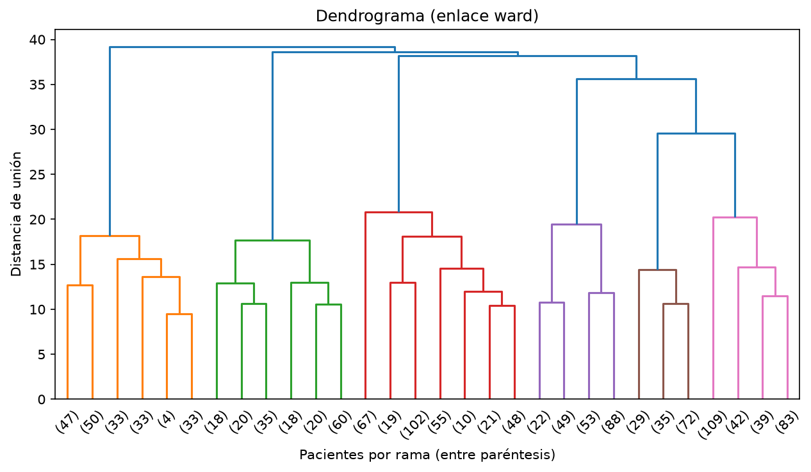
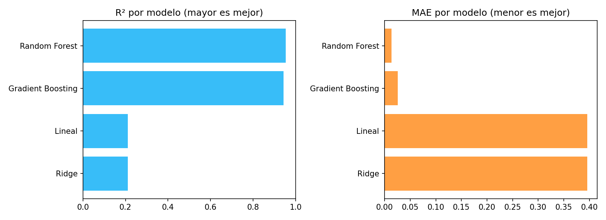
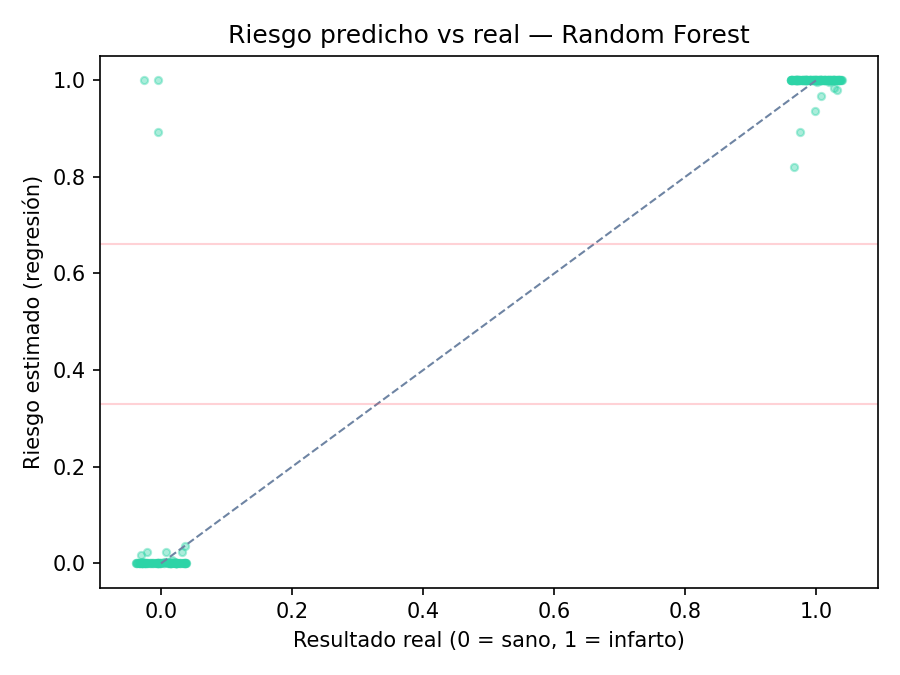
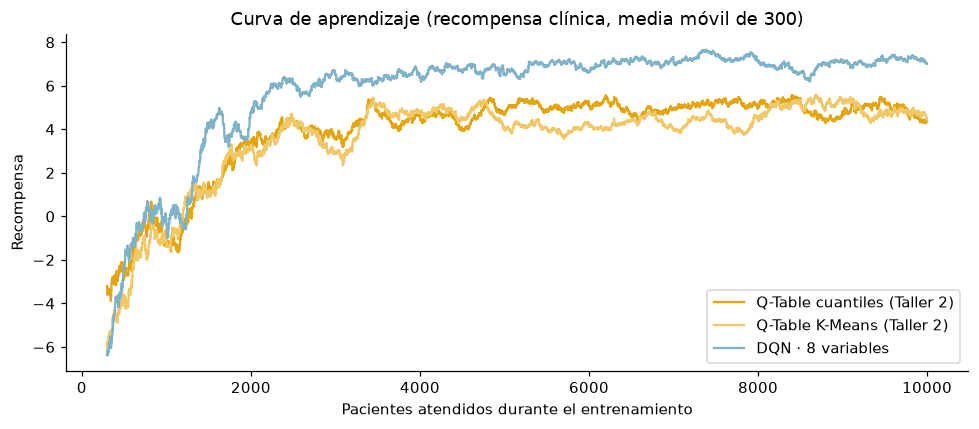
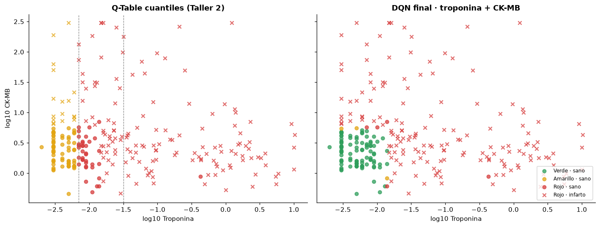
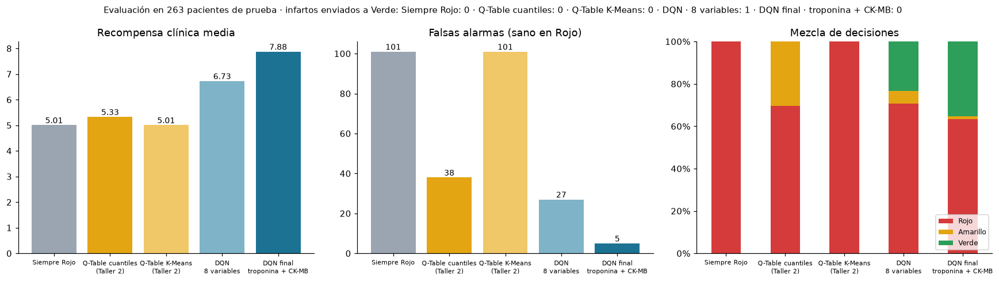
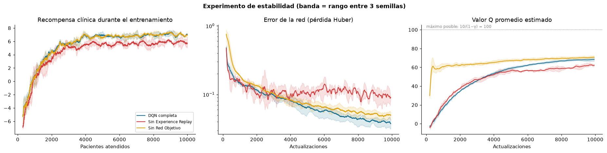

Detección temprana de infarto con aprendizaje de máquina
Un solo sistema que encadena los tres paradigmas del curso sobre 1.314 pacientes: el aprendizaje no supervisado descubre perfiles de riesgo, el supervisado estima el riesgo real y el aprendizaje por refuerzo decide a quién escalar al médico.
Pipeline completo
Recorrido del sistema
Cada etapa alimenta a la siguiente. Selecciona una para abrir su análisis.
6 ETAPAS
El problema: triaje cardíaco
Ante un paciente con sus marcadores, el agente elige un nivel del semáforo.
AGENTE
Rojo · EscalarAvisar al médico de inmediato y priorizar la atención.
Amarillo · RepetirRepetir la medición y pedir valoración clínica.
Verde · SeguimientoControl habitual según criterio profesional.
El error más costoso es el falso negativo: enviar a Verde a un paciente con infarto. Toda la recompensa del sistema está diseñada para evitarlo.
Equipo
Proyecto desarrollado en conjunto, de los datos a la política del agente.
EQUIPO
JR
Jeancarlo Rodríguez
JM
Juan Esteban Martínez
SD
Sebastián Díaz
Variables clave: troponina y CK-MB concentran casi toda la señal en todos los modelos.
PANEL DE INVESTIGACIÓN
Resumen del dataset
Explora la calidad, composición y variables clínicas del conjunto de datos.
CARDIOVASCULAR · BLOQUE 01
Datos listos para explorar.
Una vista unificada para entender la población, validar las variables y seguir el análisis del riesgo cardíaco.
SEÑAL CARDÍACA
♥Variables clínicasExploración integrada
ML aplicadoModelos en evaluación
Vista general
Indicadores calculados por el backend sobre los datos limpios.
Fuente: API del proyecto
▦VOLUMEN
—
Registros analizados↗
◈DIMENSIONALIDAD
—
Variables disponibles↗
⌕CALIDAD
—
Valores nulos encontrados✓
⟳LIMPIEZA
—
Filas duplicadas✓
Distribución del resultado
Variable objetivo: —
◌
Cargando distribución…
✓ Distribución reportada por la API; sin transformación en frontend.
Control de calidad
Resumen del proceso de limpieza
✓
✓Valores faltantesConteo en registros limpios—
✓DuplicadosRegistros completamente repetidos—
✓Variable objetivoEtiqueta usada en el análisis—
Datos procesados en el servidor
Estadísticas clínicas
Valores descriptivos entregados por el backend
Desplaza horizontalmente para ver más
VARIABLE
MÍNIMO
MEDIANA
MEDIA
MÁXIMO
ASIMETRÍA
Cargando estadísticas…
APRENDIZAJE NO SUPERVISADO
Clustering y segmentación
Compara estructuras de agrupamiento y perfiles clínicos de los pacientes.
K-Means · Jerárquico
iConectando con el módulo de clustering. Esta sección se completa cuando el backend publique sus rutas de métricas y perfiles.
Dendrograma jerárquico
Enlace Ward · visualización generada por el servidor
WARD

⌁Dendrograma no disponibleVerifica la ruta de la figura o expón el archivo desde FastAPI.
Imagen del backendLos cálculos se procesan en el servidor
Sobre el análisis
Configuración del bloque no supervisado
⌘
WardMinimiza varianza dentro del grupoJERÁRQUICO
CompleteDistancia máxima entre observacionesJERÁRQUICO
◷Esperando endpoint de evaluaciónLas métricas aparecerán aquí cuando estén disponibles en la API.
Perfiles clínicos por clúster
Medianas de biomarcadores, signos vitales y proporción de infarto
K-Means · k=5Jerárquico · k=3
CLÚSTER
PACIENTES
EDAD MEDIA
PULSO MEDIO
PA SISTÓLICA
GLUCOSA
CK-MB MED.
TROPONINA MED.
INFARTO
◷Esperando endpoint de perfilesLos perfiles clínicos se consultan al backend, no se calculan en el navegador.
DETECCIÓN DE OBSERVACIONES ATÍPICAS
Análisis de pacientes atípicos (DBSCAN)
Perfil comparativo de observaciones de ruido y pacientes en regiones densas.
Cargando resultados DBSCAN…
∑PACIENTES ANALIZADOS
—
⌁IDENTIFICADOS COMO RUIDO
—
%PORCENTAJE ATÍPICO
—
●PACIENTES EN REGIONES DENSAS
—
Perfil de pacientes atípicos y grupo denso
Comparación estadística de las características clínicas devuelta por DBSCAN
eps = 2.0 · min_samples = 14
GRUPO
PACIENTES
EDAD MEDIA
PULSO MEDIO
PA SISTÓLICA MEDIA
PA DIASTÓLICA MEDIA
GLUCOSA MEDIA
CK-MB MEDIANA
TROPONINA MEDIANA
POSITIVOS
◷Esperando resultados DBSCANLa tabla se completará con los datos del backend.
◷Esperando gráficosLas comparaciones se generan con estadísticas del backend.
APRENDIZAJE SUPERVISADO
Modelo de clasificación
Rendimiento del modelo Random Forest y variables con mayor contribución.
Configuración reportada por el backend.
Random Forest
iConectando con el módulo de clasificación. Las métricas se cargarán desde la evaluación del backend.
◎EXACTITUD
—
Evaluación en conjunto de prueba
PPRECISIÓN POSITIVA
—
Clase positive · conjunto de prueba
RRECALL POSITIVO
—
Clase positive · conjunto de prueba
F1F1-SCORE POSITIVO
—
Clase positive · conjunto de prueba
▦MUESTRAS DE PRUEBA
—
Evaluación independiente del entrenamiento
Matriz de confusión
Predicción del modelo frente a la clase real
TEST
◷Sin resultados del modeloLa matriz se mostrará cuando la API exponga la evaluación.
Filas: clase real · Columnas: clase predicha
Importancia de variables
Relevancia reportada por Random Forest
↗
◷Sin importancias disponiblesEl gráfico se construye con valores enviados por la API.
Reporte de clasificación
Precisión, recall y F1-score por clase
Salida del estimador
CLASE
PRECISIÓN
RECALL
F1-SCORE
SOPORTE
◷Reporte pendienteDisponible al conectar el endpoint de clasificación.
EXPLORACIÓN INTERACTIVA
Consultar modelo de clasificación
Envía parámetros clínicos al modelo del backend para consultar su estimación.
✦ DEMO ACADÉMICA
♡
Datos del paciente
Completa las variables utilizadas por el modelo de clasificación.
Recorrido en un árbol del Random Forest
La visualización aparecerá después de consultar el modelo.
Esta visualización corresponde a un árbol individual del Random Forest. La predicción final del modelo se obtiene mediante la combinación de los resultados de sus 100 árboles.
Recorrido del paciente Nodo no visitado Hoja terminal
Consulta un paciente para cargar la estructura real del árbol y resaltar su recorrido.
Selecciona un nodo del árbol para ver sus detalles.
APRENDIZAJE SUPERVISADO · REGRESIÓN
Regresión del riesgo de infarto
Estima un riesgo continuo entre 0 (sano) y 1 (infarto). A diferencia de la clasificación, el valor continuo permite priorizar pacientes y calibrar la acción del MDP.
4 regresores
iConectando con el módulo de regresión. Los modelos se entrenan y evalúan en el backend.
★MEJOR MODELO
—
Mayor R² en prueba
R²R² (PRUEBA)
—
Varianza explicada
ΔERROR ABSOLUTO MEDIO
—
Escala de riesgo 0–1
√RMSE
—
Penaliza errores grandes
▦PACIENTES DE PRUEBA
—
20 % estratificado
Comparación de regresores
Lineales frente a modelos de árboles
TEST
MODELO
R²
MAE
RMSE
◷Esperando resultados
Los modelos lineales (R² ≈ 0,21) no capturan la relación; los de árboles (R² ≈ 0,95) sí: el riesgo depende de forma no lineal de los marcadores.
Importancia de variables
Random Forest regresor
IMPORTANCIA
◷Esperando importancias
R² y MAE por modelo
Figura generada por bloque02/regresion.py

Riesgo predicho frente a resultado real
Las líneas marcan los umbrales del semáforo (0,33 y 0,66)

Puente regresión → MDP
El riesgo continuo se traduce en una acción del semáforo
INTEGRACIÓN
RIESGO ESTIMADO
ACCIÓN SUGERIDA
LECTURA
◷Esperando datos
APRENDIZAJE POR REFUERZO · MODELO
MDP e iteración de valor
Cuatro estados de riesgo (K-Means sobre troponina y CK-MB en log10), tres acciones, recompensa basada en el costo clínico del error y transiciones simuladas con AdaBoost + K-Means. Se resuelve con la ecuación de Bellman (γ = 0,9).
Iteración de valor
iConectando con el módulo MDP. Se leen los resultados de la iteración de valor.
SESTADOS
—
Perfiles de riesgo
AACCIONES
—
Semáforo de triaje
γDESCUENTO
—
Valora el futuro
π*POLÍTICA ÓPTIMA
—
Acción en los 4 estados
VVALOR PROMEDIO
—
Política del agente
Estados del MDP
Medianas de marcadores y proporción real de infarto
K = 4
ESTADO
PACIENTES
TROPONINA MED.
CK-MB MED.
INFARTO
◷Esperando estados
Recompensa R(s, a)
Falso negativo (infarto en Seguimiento) = −1000
RECOMPENSA
ESTADO
ESCALAR
REPETIR
SEGUIMIENTO
◷Esperando recompensas
Política óptima π*(s) = argmaxₐ Q(s, a)
Valor óptimo y valores Q de cada acción tras converger (230 iteraciones)
BELLMAN
ESTADO
V*(s)
Q(ESCALAR)
Q(REPETIR)
Q(SEGUIMIENTO)
ACCIÓN ÓPTIMA
◷Esperando política
Batalla de políticas
Valor promedio de los estados bajo cada estrategia
EVALUACIÓN
◷Esperando comparación
Reglas de oro
Lo que emergió de la ecuación de Bellman
ANÁLISIS
Escala incluso en "Bajo" (34 % de infarto): el costo del falso negativo pesa ~100 veces más que una falsa alarma.
Nunca elige Repetir: paga un costo y casi no cambia el estado del paciente; solo posterga el riesgo.
Valora más Alto-T que Alto-CK aunque Alto-CK pague más hoy: Alto-T es un estado estable y rentable. El agente optimiza el futuro, no un paso.
¿Por qué k = 4 aquí y k = 5 en Clustering? El clustering exploratorio usa 7 variables clínicas para describir la población (k = 5). El MDP necesita un espacio de estados pequeño para evitar la maldición de la dimensionalidad, así que usa solo troponina y CK-MB (k = 4).
Transiciones P(s′ | s, a)
Filas: estado actual · columnas: estado siguiente · cada fila suma 1
DINÁMICA
◷Esperando transiciones
APRENDIZAJE POR REFUERZO · AGENTES
Del Q-Learning tabular a la Deep Q-Network
Mismo entorno, recompensa e hiperparámetros (γ = 0,9; 10.000 pasos); solo cambia el "cerebro" del agente: de una tabla Q sobre estados discretos a una red neuronal con Experience Replay y red objetivo sobre estado continuo.
Q-Table vs DQN
iConectando con los resultados de refuerzo. Se leen los experimentos de taller3_dqn.
▦ENTRENAMIENTO
—
Pacientes
▦PRUEBA
—
Nunca vistos
★RECOMPENSA DQN FINAL
—
vs Q-Table
FNINFARTOS EN VERDE
—
Falsos negativos · DQN final
!FALSAS ALARMAS
—
Sanos en Rojo · DQN final
Comparación de políticas (263 pacientes de prueba)
La fila resaltada es la mejor recompensa clínica
TEST
POLÍTICA
RECOMPENSA
INFARTOS EN VERDE
FALSAS ALARMAS
SANOS EN VERDE
% ROJO
% AMARILLO
% VERDE
◷Esperando comparación
Recompensa del entorno
Por resultado real y color asignado
RESULTADO
VERDE
AMARILLO
ROJO
Trucos de estabilidad
3 semillas · 8 variables
VARIANTE
RECOMPENSA
FN PROM/MÁX
Selección de variables
¿Cuántas variables ve la red?
VARIANTE
RECOMPENSA
FN PROM/MÁX
Curva de aprendizaje
Recompensa durante el entrenamiento

Mapa de decisiones
Acción elegida según troponina y CK-MB

Comparación final
Q-Table frente a DQN

Experience Replay y red objetivo
Efecto de quitar cada truco

La DQN supera a la tabla Q porque trabaja sobre el valor continuo de los marcadores y no sobre su grupo: separa mejor a los sanos (92 % en Verde) sin dejar ningún infarto en Verde. La demo interactiva del agente se ejecuta con streamlit run app.py dentro de taller3_dqn/.
CIERRE DEL PROYECTO
Conclusiones
Qué aportó cada paradigma y qué aprendió el sistema en conjunto.
3 paradigmas
NO SUPERVISADO
4 + 5 perfiles
Los datos se agrupan solos
Sin usar la etiqueta, K-Means separó perfiles con 34 % a 100 % de infarto. Esa estructura definió los estados del MDP y DBSCAN aisló un 3,7 % de pacientes atípicos.
CLASIFICACIÓN
99,2 % exactitud
Detectar infarto es casi perfecto
El Random Forest no deja infartos sin detectar en prueba (recall 100 %). Troponina y CK-MB explican más del 80 % de la decisión.
REGRESIÓN
R² = 0,95
El riesgo es no lineal
Los modelos de árboles estiman el riesgo continuo con precisión; los lineales fallan (R² 0,21). El riesgo continuo conecta lo supervisado con la decisión.
MDP
+435 vs −8.407
Precaución que emerge de los números
La iteración de valor eligió Escalar en los 4 estados. Supera a "nunca actuar" por casi 9.000 puntos: es la respuesta a un costo de falso negativo 100 veces mayor.
DQN
7,88 · 0 FN · 5 FA
La red neuronal decide mejor
Frente a la tabla Q (5,33 y 38 falsas alarmas), la DQN reduce las falsas alarmas un 87 % sin dejar ningún infarto en Verde, gracias a operar sobre el valor continuo de los marcadores.
SISTEMA
3 paradigmas · 1 agente
Cada etapa alimenta a la siguiente
Lo no supervisado da la estructura, lo supervisado mide el riesgo y el refuerzo convierte ese conocimiento en una política de triaje que prioriza no perder un infarto.
Limitaciones
Lo que hay que tener presente
El dataset tiene una observación por paciente; las transiciones del MDP son simuladas, no longitudinales.
Las recompensas y los multiplicadores son supuestos de diseño y deben validarse con personal médico.
Las métricas tan altas reflejan que troponina y CK-MB casi determinan el resultado en este conjunto.
Trabajo futuro
Cómo llevarlo más lejos
Validar con datos longitudinales reales para estimar transiciones observadas.
Calibrar la recompensa con costos clínicos de la institución y análisis de sensibilidad.
Evaluar el agente con médicos en un esquema de decisión asistida, nunca autónoma.
CardioLab es un proyecto académico: sus resultados son experimentales y no sustituyen una valoración médica.